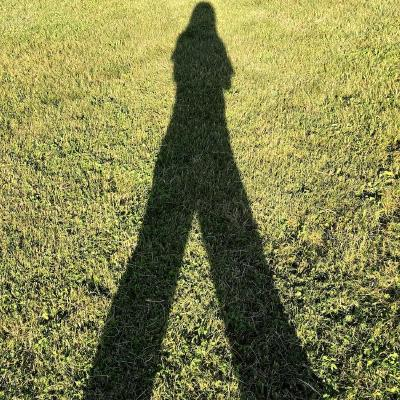

|  | Ph.D., |
I am currently a Postoctoral in the Department of Mathematics at The Pennsylvania State University.
I received the B.S. degree in Mathematics and Applied Mathematics from Wuhan University in 2014. In Summer of 2018, I received my Ph.D. degree in Computational Mathematics under the supervision of Prof.Jun Hu at Peking University at Beijing, China. From 2018 to 2021, I worked as a Postdoctoral Scholar suprevised by Prof. Jinchao Xu in The Center for Computational Mathematics and Application (CCMA) in the Department of Mathematics at The Pennsylvania State University, University Park.
Ph.D., Computational Mathematics, Peking University, 2013-2018
Advisor: Prof. Jun Hu
Thesis: High accuracy methods for eigenvalue problems by nonconforming elements
B.S., Computational Mathematics, Wuhan University, 2009-2013
My research interest regards the approximation by finite elements of partial differential equations. In particular, I worked on the following areas:
Numerical algorithms and analysis for eigenvalue problems
Superconvergence of nonconforming elements and mixed elements
Discontinuous Galerkin methods for linear elasticity problems
J. Hu and L. Ma, A Penalized Crouzeix–Raviart Element Method for Second Order Elliptic Eigenvalue Problems, Journal of Scientific Computing, 74(3):1457-1479, 2018.
J. Hu and L. Ma, Asymptotically Exact A Posteriori Error Estimates of Eigenvalues by the Crouzeix–Raviart Element and Enriched Crouzeix–Raviart Element, SIAM Journal on Scientific Computing, 42(2): A797–A821, 2020.
J. Hu, L. Ma and R. Ma, Optimal Superconvergence Analysis for the Crouzeix-Raviart and the Morley elements, https://arxiv.org/abs/1808.09810, 2019.
J. Hu and L. Ma, Asymptotic Expansions of Eigenvalues by both the Crouzeix-Raviart and Enriched Crouzeix-Raviart elements, https://arxiv.org/abs/1902.09524, 2020.
Q. Hong, J. Hu, L. Ma and J. Xu, Extended Galerkin Method for Linear Elasticity with Strongly Symmetric Stress Tensor, https://arxiv.org/abs/2002.11664, 2020
L. Ma, Superconvergence of Discontinuous Galerkin Methods for the Scaler Elliptic Problems and Linear Elasticity Problems, https://arxiv.org/abs/2010.10507, 2020
Instructor at The Pennsylvania State University:
MATH 230: Calculus and Vector Analysis, Spring 2020, Pennsylvania State University.
MATH 140: Calculus with Analytic Geometry I, Fall 2019, Pennsylvania State University.
MATH 251: Ordinary and Partial Differential Equations, Spring 2019, Pennsylvania State University.
Teaching assistant at The Pennsylvania State University and Peking University for:
MATH & CSE 555: Optimization, Spring 2021, Pennsylvania State University.
MATH 597: Special Topics, Spring 2019, Pennsylvania State University.
MATH 556: Finite Element Methods, Fall 2018, Pennsylvania State University.
An Introduction to Applied Mathematics, Fall 2016, Peking University
Linear Algebra, in 2016, Peking University
Advanced Mathematics, in 2014 and 2015, Peking University
Attend the 2019 AMS-JMM at Baltimore, January 16-19, 2019.
Attend the fall 2018 FE Circus at Delaware, November 9-10, 2018.
Co-organizer of 4th Graduate Forum on Numerical Methods for Partial Differential Equations, Peking University, China, July 2016.
Co-organizer of 2nd Beijing Graduate Forum on Computational Mathematics, Peking University, China, August 2015
15th Annual Meeting of China Society for Industrial and Applied Mathematics, Qingdao, China, October 2017.
11th National Conference on Computational Mathematics, Xi'an, China, July 2017.
9th National Conference on Finite Elements, E'mei, China, August 2016.
4th Graduate Forum on Numerical Methods for Partial Differential Equations, Peking University, China, July 2016.